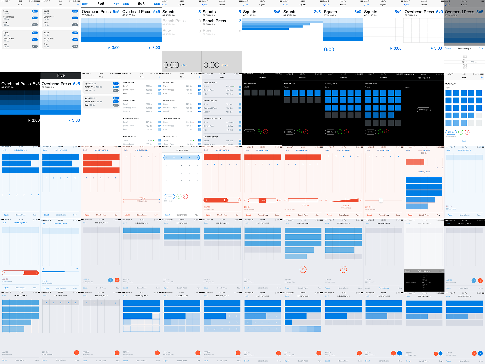
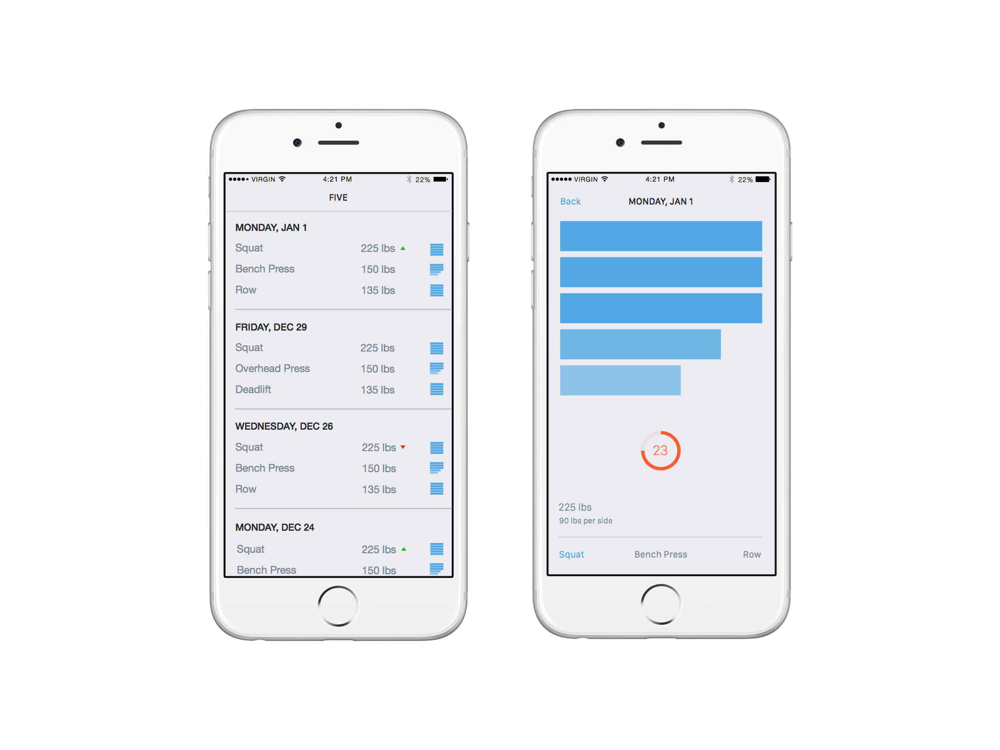

I worked with the Carousel team on user interface ideas for sharing and navigating photos.
Speed scroller Lightbox iPadSimple notes app based on the insight that typing is the fastest way to open a note or take a new one. I also developed a prototype in Swift.
Hybrid input box Pull to createA tool to facilitate turn based collaboration and reduce conflicted copies.
Viewer Editor Multiple editors B-reelMobile prototyping for user interface ideas around search, discovery and input
Tokenized search Voice input iPadI designed and developed a workout recording app for the 5×5 workout. I was both learning Swift and solving a personal problem. View on Github.
 Design iterations  View on Github. Art direction Oliver Munday
Art direction Oliver Munday
 Time magazine, Art direction Oliver Munday
Time magazine, Art direction Oliver Munday
 New York Times, Art direction Abbott Miller
New York Times, Art direction Abbott Miller
 New York Times, Art direction Abbott Miller
Codepath identity
New York Times, Art direction Abbott Miller
Codepath identity
 Codepath business card
Codepath business card